Der Panther war eine Reaktion auf die neuen T34 und KV-1 Panzer der Sowjetunion die am. Anfang des Unternehmen Barbarossa die Deutschen Panzer dominierten. Die deutschen mussten mit dem. Panther dank seiner Kanone nicht gross über die Ziele schiessen, da die Flugbahn der Schüsse sehr flach ist. Da der Panther nicht der simpelste Panzer zu bauen war, hatten die Deutschen das Problem, das sie nicht schnell genug die benötigten Panzer herstellen konnten. Der Panther könnte möglicherweise einer der besten Panzer der Deutschen gewesen sein, da er im Vergleich zum Tiger Panzer weniger Ressourcen brauchte, um zu bauen, aber trotzdem. Gute Feuerkraft aufweist und um einiges Mobiler ist.
Reichweite (Die dickste Panzer platte wird beschossen)
Vorteile
- Gute Optiken
- Genaue und Starke Kanone
- Gute Panzerung, M4a4 Shermans können die Panzerung z.B. erst ab 250m durchdringen.
- Mobil
- gute Panzerung
Nachteile
- Braucht, obwohl er als mittlerer Panzer gilt, viele Ressourcen
- Ist komplex zu bauen und somit auch schwierig zu reparieren
- konnten nicht genug Panzer produziert werden, dass heisst es war nicht sehr wahrscheinlich als Alliierter Panzer Fahrer jemals einem Panther zu begegnen
Spezifikationen
| Besatzung | 5 |
| Länge | 6,88 m |
| Breite | 3,42 m |
| Höhe | 2,99 m |
| Masse | 40,8 Tonnen |
| Panzerung | 16–100 mm |
| Hauptbewaffnung | 7,5-cm-KwK 42 L/70 |
| Sekundärbewaffnung | 2 × 7,92-mm-MG 34 |
| Höchstgeschwindigkeit | 55 km/h |
| Leistung/Gewicht | 15,6 PS/t |
| Fahrreichweite | 200 km (Straße) |
Bilder